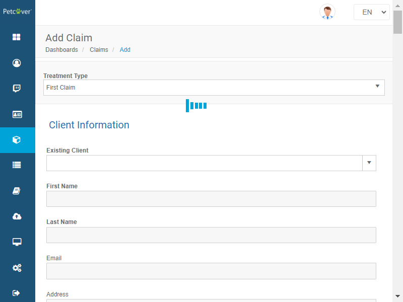
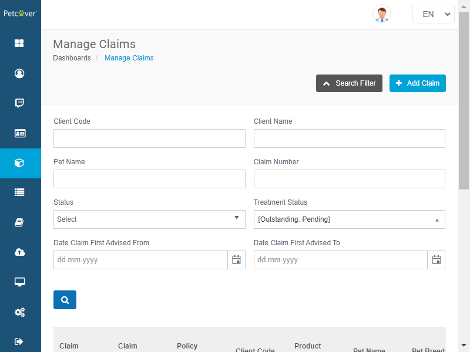
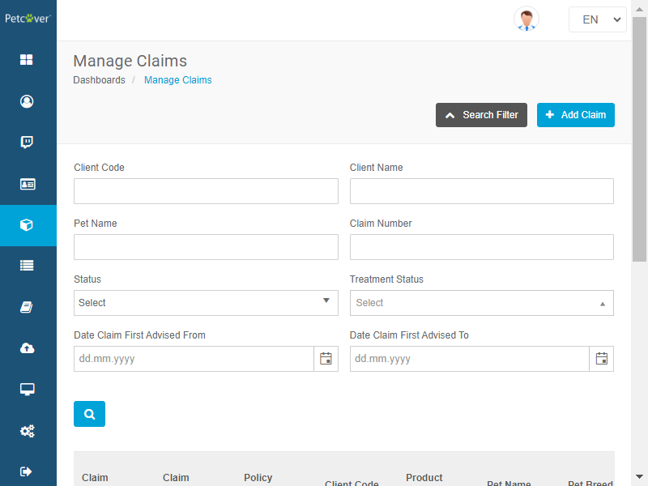
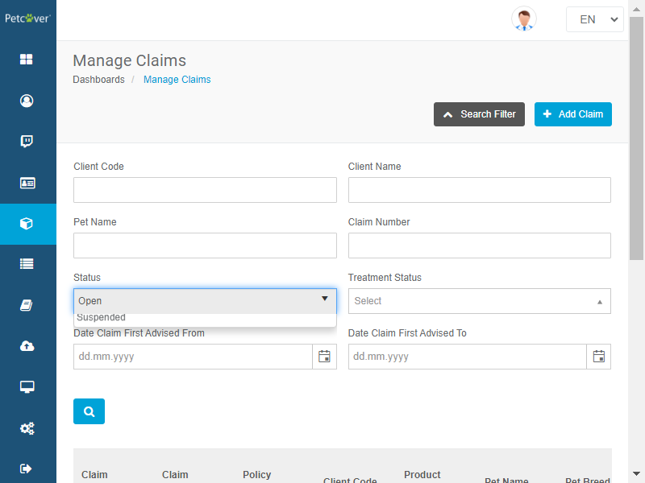
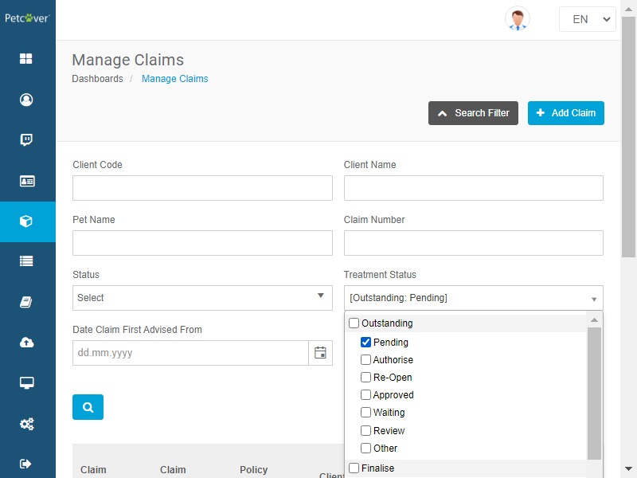
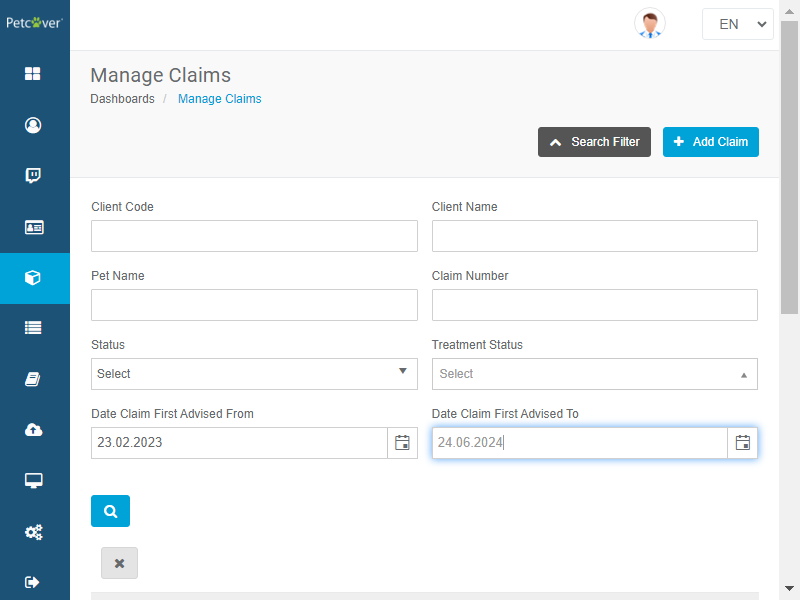

-
Verify Manage Claim Module Features
0h 5m 56s+151ms
16:00:21 pmVerify Manage Claim Module Features
03.14.2024 16:00:21 03.14.2024 16:06:17 0h 5m 56s+151msManage claims page should open with the claim details after clicking on manage claim icon on left tool barGiven User should log in with username "sa" and password "Good2go@2019" to the admin panelWhen User clicks on manage claims icon on left tool barThen User will able see all data available on manage claim pagehook.hooks.displayUrl(io.cucumber.java.Scenario)https://stage.petcovergroup.com:7779/hook.hooks.takeScreenShotOnFailure(io.cucumber.java.Scenario) All data under date column displays with dd-mm-yyyy format and data under amount should prefixed by £ sign on manage claim pageGiven User should log in with username "sa" and password "Good2go@2019" to the admin panelWhen User clicks on manage claims icon on left tool barThen All data under treatment and cliam first advised date column displays in dd-mm-yyyy formatThen All data under Amount paybale column prefixed by £ signStep skippedhook.hooks.displayUrl(io.cucumber.java.Scenario)https://stage.petcovergroup.com:7779/hook.hooks.takeScreenShotOnFailure(io.cucumber.java.Scenario)
All data under date column displays with dd-mm-yyyy format and data under amount should prefixed by £ sign on manage claim pageGiven User should log in with username "sa" and password "Good2go@2019" to the admin panelWhen User clicks on manage claims icon on left tool barThen All data under treatment and cliam first advised date column displays in dd-mm-yyyy formatThen All data under Amount paybale column prefixed by £ signStep skippedhook.hooks.displayUrl(io.cucumber.java.Scenario)https://stage.petcovergroup.com:7779/hook.hooks.takeScreenShotOnFailure(io.cucumber.java.Scenario) User will redirect to respected claim information page by clicking on claim number link on manage claim pageGiven User should log in with username "sa" and password "Good2go@2019" to the admin panelWhen User clicks on manage claims icon on left tool barWhen User clicks on claim number on manage claim pageThen User will redirects to respected claim information pageStep skippedhook.hooks.displayUrl(io.cucumber.java.Scenario)https://stage.petcovergroup.com:7779/hook.hooks.takeScreenShotOnFailure(io.cucumber.java.Scenario)Add claim page displays all dropdowns with valid items and date appears with calender iconGiven User should log in with username "sa" and password "Good2go@2019" to the admin panelWhen User clicks on manage claims icon on left tool barWhen User clicks on add claim buttonThen User will redirect to add claim pageAnd Page has all dropdown with valid list items'hook.hooks.displayUrl(io.cucumber.java.Scenario)https://stage.petcovergroup.com:7779/hook.hooks.takeScreenShotOnFailure(io.cucumber.java.Scenario)
User will redirect to respected claim information page by clicking on claim number link on manage claim pageGiven User should log in with username "sa" and password "Good2go@2019" to the admin panelWhen User clicks on manage claims icon on left tool barWhen User clicks on claim number on manage claim pageThen User will redirects to respected claim information pageStep skippedhook.hooks.displayUrl(io.cucumber.java.Scenario)https://stage.petcovergroup.com:7779/hook.hooks.takeScreenShotOnFailure(io.cucumber.java.Scenario)Add claim page displays all dropdowns with valid items and date appears with calender iconGiven User should log in with username "sa" and password "Good2go@2019" to the admin panelWhen User clicks on manage claims icon on left tool barWhen User clicks on add claim buttonThen User will redirect to add claim pageAnd Page has all dropdown with valid list items'hook.hooks.displayUrl(io.cucumber.java.Scenario)https://stage.petcovergroup.com:7779/hook.hooks.takeScreenShotOnFailure(io.cucumber.java.Scenario)
Treatment status should reflect upon option selected from treatment status drop down on manage claim pageGiven User should log in with username "sa" and password "Good2go@2019" to the admin panelWhen User clicks on manage claims icon on left tool barWhen User selects any options from treatment status dropdown on manage claim pageThen Appropriate treatment status will display on manage claim page under claim detailshook.hooks.displayUrl(io.cucumber.java.Scenario)https://stage.petcovergroup.com:7779/hook.hooks.takeScreenShotOnFailure(io.cucumber.java.Scenario)
Verify edit claim page displays after clicking on edit claim icon on manage claim pageGiven User should log in with username "sa" and password "Good2go@2019" to the admin panelWhen User clicks on manage claims icon on left tool barWhen User clicks on edit claim icon on cog icon on manage claim pageThen Edit claim page displays with editable formStep skippedhook.hooks.displayUrl(io.cucumber.java.Scenario)https://stage.petcovergroup.com:7779/hook.hooks.takeScreenShotOnFailure(io.cucumber.java.Scenario) Verify view policy page displays after clicking on view policy icon on manage claim pageGiven User should log in with username "sa" and password "Good2go@2019" to the admin panelWhen User clicks on manage claims icon on left tool barWhen User clicks on view policy icon on cog icon on manage claim pageThen View policy page displays with all detailsStep skippedhook.hooks.displayUrl(io.cucumber.java.Scenario)https://stage.petcovergroup.com:7779/hook.hooks.takeScreenShotOnFailure(io.cucumber.java.Scenario)
Verify view policy page displays after clicking on view policy icon on manage claim pageGiven User should log in with username "sa" and password "Good2go@2019" to the admin panelWhen User clicks on manage claims icon on left tool barWhen User clicks on view policy icon on cog icon on manage claim pageThen View policy page displays with all detailsStep skippedhook.hooks.displayUrl(io.cucumber.java.Scenario)https://stage.petcovergroup.com:7779/hook.hooks.takeScreenShotOnFailure(io.cucumber.java.Scenario)
Filter Claim details on manage claim page upon option from claim status drop downGiven User should log in with username "sa" and password "Good2go@2019" to the admin panelWhen User clicks on manage claims icon on left tool barWhen User selects appropriate option from claim status dropdownAnd User clicks on search button on manage claim pageThen Details of claim on manage claim page filters upon status drop dwon optionStep skippedhook.hooks.displayUrl(io.cucumber.java.Scenario)https://stage.petcovergroup.com:7779/hook.hooks.takeScreenShotOnFailure(io.cucumber.java.Scenario)
Filter Claim details on manage claim page upon option from treatment status drop downGiven User should log in with username "sa" and password "Good2go@2019" to the admin panelWhen User clicks on manage claims icon on left tool barWhen User selects appropriate option from treatment status drop downAnd User clicks on search button on manage claim pageThen Details of claim on manage claim page filters upon treatment status drop down optionStep skippedhook.hooks.displayUrl(io.cucumber.java.Scenario)https://stage.petcovergroup.com:7779/hook.hooks.takeScreenShotOnFailure(io.cucumber.java.Scenario)
Filter Claim details on manage claim page upon from and to date value of claim first advised on manage claim pageGiven User should log in with username "sa" and password "Good2go@2019" to the admin panelWhen User clicks on manage claims icon on left tool barWhen User enters value of from and to date value of claim first advised on manage claim pageAnd User clicks on search button on manage claim pageThen Details of claim on manage claim page filters upon value of from and to date value of claim first advised on manage claim pageStep skippedhook.hooks.displayUrl(io.cucumber.java.Scenario)https://stage.petcovergroup.com:7779/hook.hooks.takeScreenShotOnFailure(io.cucumber.java.Scenario)
-
@Sanity
5 tests
5@Sanity
5 failedStatus Timestamp TestName 16:00:21 pm Manage claims page should open with the claim details after clicking on manage claim icon on left tool bar Verify Manage Claim Module Features.Manage claims page should open with the claim details after clicking on manage claim icon on left tool bar16:01:02 pm All data under date column displays with dd-mm-yyyy format and data under amount should prefixed by £ sign on manage claim page Verify Manage Claim Module Features.All data under date column displays with dd-mm-yyyy format and data under amount should prefixed by £ sign on manage claim page16:01:42 pm User will redirect to respected claim information page by clicking on claim number link on manage claim page Verify Manage Claim Module Features.User will redirect to respected claim information page by clicking on claim number link on manage claim page16:02:27 pm Add claim page displays all dropdowns with valid items and date appears with calender icon Verify Manage Claim Module Features.Add claim page displays all dropdowns with valid items and date appears with calender icon16:05:57 pm Filter Claim details on manage claim page upon from and to date value of claim first advised on manage claim page Verify Manage Claim Module Features.Filter Claim details on manage claim page upon from and to date value of claim first advised on manage claim page
-
org.openqa.selenium.TimeoutException
4 tests
org.openqa.selenium.TimeoutException
Status Timestamp TestName 16:00:39 pm Then User will able see all data available on manage claim page Manage claims page should open with the claim details after clicking on manage claim icon on left tool bar16:01:20 pm Then All data under treatment and cliam first advised date column displays in dd-mm-yyyy format All data under date column displays with dd-mm-yyyy format and data under amount should prefixed by £ sign on manage claim page16:02:00 pm When User clicks on claim number on manage claim page User will redirect to respected claim information page by clicking on claim number link on manage claim page16:03:28 pm Then Appropriate treatment status will display on manage claim page under claim details Treatment status should reflect upon option selected from treatment status drop down on manage claim page -
org.openqa.selenium.ElementClickInterceptedException
1 tests
org.openqa.selenium.ElementClickInterceptedException
Status Timestamp TestName 16:02:53 pm And Page has all dropdown with valid list items' Add claim page displays all dropdowns with valid items and date appears with calender icon -
org.openqa.selenium.json.JsonException
2 tests
org.openqa.selenium.json.JsonException
Status Timestamp TestName 16:04:11 pm When User clicks on edit claim icon on cog icon on manage claim page Verify edit claim page displays after clicking on edit claim icon on manage claim page16:04:38 pm When User clicks on view policy icon on cog icon on manage claim page Verify view policy page displays after clicking on view policy icon on manage claim page -
org.openqa.selenium.NoSuchElementException
3 tests
org.openqa.selenium.NoSuchElementException
Status Timestamp TestName 16:05:13 pm And User clicks on search button on manage claim page Filter Claim details on manage claim page upon option from claim status drop down16:05:44 pm And User clicks on search button on manage claim page Filter Claim details on manage claim page upon option from treatment status drop down16:06:17 pm And User clicks on search button on manage claim page Filter Claim details on manage claim page upon from and to date value of claim first advised on manage claim page
Features
Scenarios
Steps
Features
1
.00%Scenarios
10
.00%Start
Mar 14, 2024 04:00:02 pm
Duration
0h 6m 14s+812ms
Timeline
Tags
| Name | Passed | Failed | Skipped | Others | Passed % |
|---|---|---|---|---|---|
| @Sanity | 0 | 5 | 0 | 0 | 0% |
Environment
| Name | Value |
|---|---|
| Build | 1.1 |
| AppName | UTS-UK2 |
| Environment | https://fitlocal2.britishpetinsurance.co.uk:94/ |
| User | Qa-Prowerse |
| Os | Window |